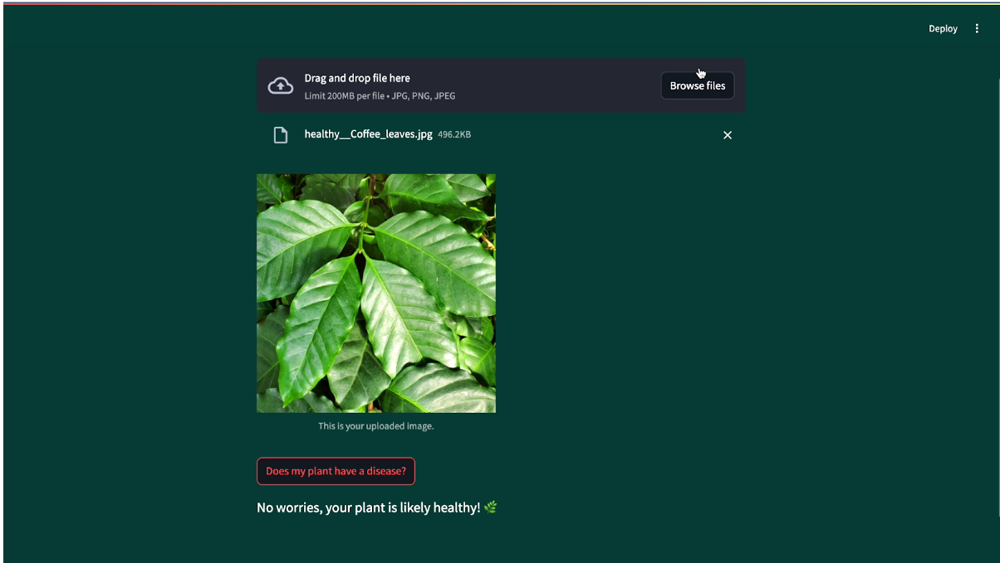
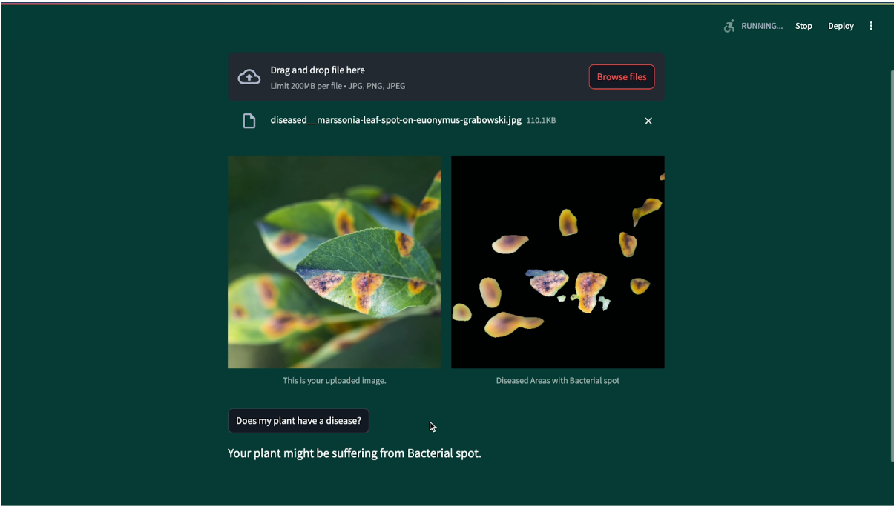
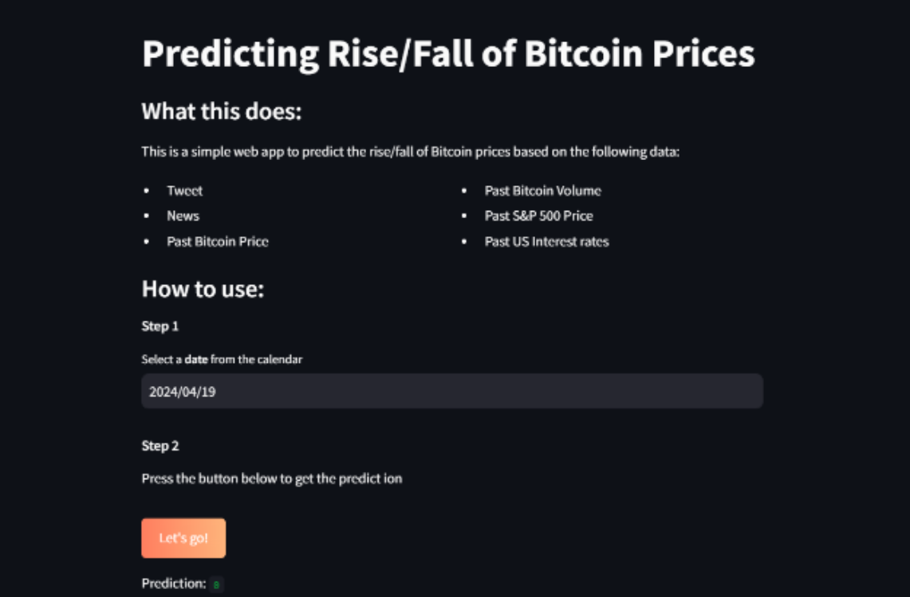
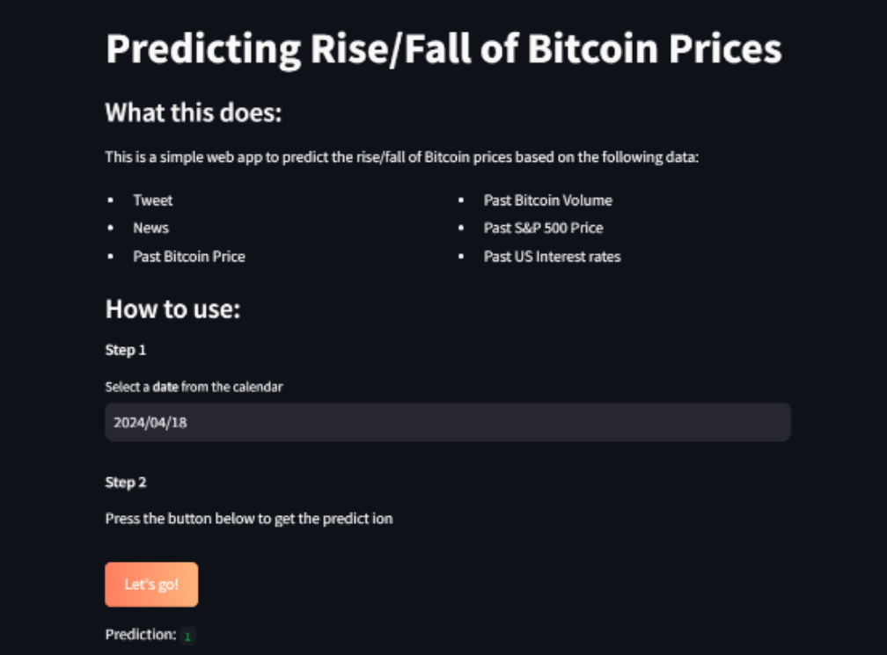
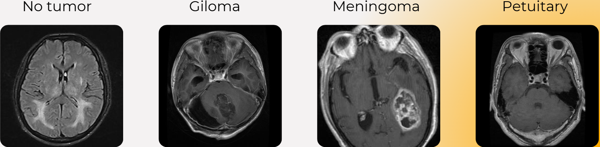
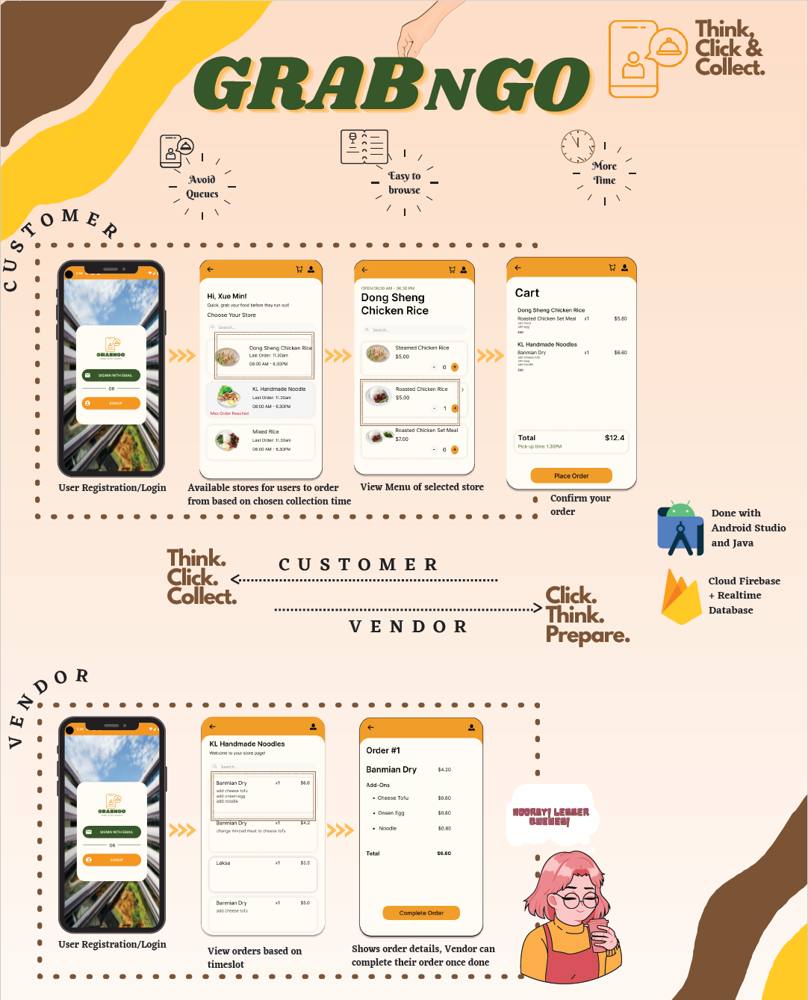

Working Experiences
ST Engineering Urban Solutions Ltd.
(May 2024 - Sep 2024)
I was responsible for developing and training predictive models using LSTM, CNN, and PyCaret, an open-source machine learning library, to enhance the "look up lot availability before you go" feature in the GoParkin application developed by ST Engineering Urban Solutions Smart Carpark Payment Department. This feature leverages AI to forecast hourly car park occupancy at NTU, allowing users to plan their parking strategies effectively. For instance, if a user checks the app and it predicts that a particular car park will be 'Full' in the next hour, they can plan to park elsewhere. I conducted hyperparameter tuning to optimize model performance, achieving 94.07% accuracy on the testing dataset.
ST Engineering Urban Solutions Ltd.
(Sep 2023 - Jan 2024)

During my internship at ST Engineering Urban Solutions Ltd., I successfully implemented a highly efficient Python script to automate the processing of a sizable dataset, comprising around 30,000 rows. This script not only eliminated the need for manual intervention but also significantly reduced the processing time from 1 or 2 days to a mere 22 minutes. The implementation led to a remarkable enhancement in overall workflow efficiency. Additionally, I played a pivotal role in the implementation of car image annotation, contributing to the improvement of machine learning models by enhancing their understanding of diverse visual elements. Moreover, I adopted an iterative approach to license plate verification, embodying continuous improvement principles to optimize accuracy and reliability in both machine learning and deep learning models.
ST Engineering Urban Solutions Ltd.
(May 2022 - Sep 2022)

During my tenure as a temporary data analyst in this role, I played a crucial role in processing essential data required by my superiors. Leveraging Microsoft Excel formulas and the Python programming language, I ensured accurate and efficient data manipulation. Additionally, I demonstrated proficiency in data visualization techniques, utilizing pivot charts in Microsoft Excel and SAS Visual Analytics to present insightful representations of the data. Beyond data analysis, I actively contributed to the team by creating a User Acceptance Testing (UAT) template and actively participating in the testing process for the GoParkin mobile application. Moreover, I provided valuable support to my superiors by assisting in video editing tasks, showcasing my versatility and commitment to meeting diverse job requirements.
ST Engineering Urban Solutions Ltd.
(Mar 2021 - Jul 2021)

In my role as an associate engineer, I took charge of a significant project involving the renewal of CA certificates for routers and switches configuration at HDB sites, as part of the collaboration between ST Engineering and the Singapore Police Force (SPF). This hands-on experience provided me valuable insights into project management, emphasizing the crucial balance of time, scope, and resources management. Effectively planning and coordinating with relevant authorities, I ensured the smooth execution of the daily deployment schedule. Utilizing forecasting techniques, I successfully anticipated the project's completion date, managing to deploy over 1,400 routers approximately one month ahead of the expected timeline. Building on this experience, I took on a leadership role, guiding three interns and assisting my superiors in another project focused on network equipment configuration at MRT sites.
SAS Institute Pte. Ltd. (Sep 2020 - Jan 2021)
Through this internship, I significantly improved my proficiency in Microsoft Excel, recognizing the importance of effective communication in the workplace. Moreover, I seized the opportunity to expand my skill set by enrolling in various courses offered by the company, including SAS Programming, SAS Visual Analytics, and Statistics. Successfully completing the SAS Base Programming examination, I earned the prestigious SAS Certified Specialist_Base Programming Using SAS 9.4 certificate. Besides, I was honored with an invitation to my supervisor's house, where I had the unique opportunity to engage in a hands-on experience crafting a rainbow-themed terrarium.
Project
CHIME (Jan 2025 - Apr 2025)
The project goal is to develop a mobile game that aims to introduce a crisis management framework that empowers first responders to resolve unexpected emergencies effectively. CHIME, stands for cognitive load, heuristics, information clarity, mental model, external aid. By playing our mobile game, users will be tested on these cognitive factors.
Click here to take a look on this project and here for the demonstration video.
Smart Pillbox (Sep 2024 - Dec 2024)
This project aimed to develop a Smart IoT Pillbox that enables continuous monitoring of elderly medication adherence. The solution provides physical and digital reminders for medication intake, allows caregivers to remotely track adherence in real time, and sends refill notifications when medication is consumed. The system combines hardware and cloud-based IoT services to enhance medication management and ensure timely alerts. My contributions involved both hardware integration and cloud-based IoT implementation. I integrated a weight sensor with a Raspberry Pi, wiring a load cell and amplifier to the appropriate GPIO pins. I configured the Raspberry Pi to communicate with AWS IoT Core by installing certificates and the AWS IoT Device SDK, ensuring secure connectivity. I designed an AWS IoT rule to insert and update medication data, such as intake status and pillbox ID, in a DynamoDB table. To automate monitoring, I implemented a scheduled AWS Lambda function using EventBridge, which periodically scanned the database and sent alerts via MQTT if adherence was not met. Additionally, I developed and deployed a Python script (mqtt_client.py) on the Raspberry Pi to read weight sensor data and publish it to AWS MQTT topics. To streamline deployment and ensure consistency, I containerized the solution using Docker. These contributions enhanced the system's efficiency and reliability, offering a scalable solution to improve medication adherence for elderly users.
Click here to take a look on this project and here for the demonstration video.
Plant Disease Detection (Sep 2024 - Dec 2024)


This project focused on assisting farmers in monitoring and detecting plant diseases through leaf images, enabling early intervention to mitigate disease spread and reduce crop loss. By leveraging deep learning techniques, we aimed to build an efficient and accurate solution tailored for agricultural needs. I implemented SqueezeNet, a compact model designed to achieve AlexNet-level accuracy with significantly fewer parameters through its innovative fire module design, combining squeeze and expand layers for model size efficiency. Additionally, I utilized InceptionV3, a deep convolutional neural network known for its high accuracy and computational efficiency in image classification tasks. I evaluated both models using metrics such as accuracy, Area Under the Receiver Operating Characteristic Curve (AUROC), and F1 score, ensuring comprehensive assessment of their performance.
Click here to take a look on this project!
Bitcoin Price Movement Prediction (Jan 2024 - Apr 2024)


In this project, we aimed to develop a robust machine learning model to predict the direction of Bitcoin’s price movement for the next day using historical price data and relevant features such as trading volume, volatility, sentiment analysis, and technical indicators. To achieve this, we explored a range of machine learning algorithms, including LSTM, SVM, random forest, AdaBoost, MLP, logistic regression, and neural networks. The model’s effectiveness was evaluated using the F1 score, ensuring reliability in binary classification tasks. My primary contributions included data preprocessing and visualization for Bitcoin price data, the US Federal Interest Rate dataset, and the S&P 500 index dataset. I addressed missing values by forward-filling non-trading days, merging datasets on the 'Date' column, and engineering features such as the 'BTC-USD Next Day Close' and 'Price Change Indicator' columns. Additionally, I applied Min-Max normalization to standardize data scales for consistency. I investigated the influence of the S&P 500 index and US Federal interest rate on Bitcoin price movements using a Support Vector Machine (SVM) model, leveraging its capacity to handle non-linear relationships in financial data. This involved training SVM models with polynomial and radial basis function (RBF) kernels through an 80-20 train-test split and optimizing hyperparameters using 10-fold cross-validation with grid search. These contributions played a crucial role in ensuring data integrity, optimizing the model, and uncovering complex relationships in the dataset.
Click here to take a look on this project!
Brain Tumour Detection (Jan 2024 - Apr 2024)

This deep learning project was designed to assist medical practitioners in accelerating the classification of MRI scans for brain tumors. My role involved training ResNet and DenseNet models to classify MRI scans into one of four categories: glioma, meningioma, pituitary tumor, or no tumor. By leveraging ResNet, I achieved an impressive accuracy of 98.32%, demonstrating the model's effectiveness in precise tumor classification.
Click here to take a look on this project!
SuRe (May 2023 - Aug 2023)
This project focused on establishing a web-based retail invoice data management system. Utilizing Optical Character Recognition (OCR), the system converts physical invoices and statements of account into a customized format, facilitating seamless integration with other software applications. The web application, developed collaboratively by a team of 7 members using the Software Development Life Cycle (SDLC), not only streamlines the conversion process but also empowers retailers to efficiently track their invoice spending.
Click here to take a look on this project!
Grab-N-Go (Jan 2023 - Apr 2023)

In response to the persistent issue of long queues during peak hours at the SUTD canteen, the proposed Grab-N-Go mobile application aims to enhance the dining experience for students and staff. By allowing users to pre-order their meals, the application effectively reduces congestion and inconvenience. Users can conveniently select their preferred collection time slot, browse through various stores and menus, customize their orders, and seamlessly collect their food at the designated Grab-N-Go counter. The design prioritizes user-friendliness, ensuring a smoother experience for both customers and canteen vendors, ultimately creating a more efficient and pleasant dining environment.
Click here to take a look on this project!
Chop2Pay (Jan 2023 - Feb 2023)

Together with Vinny, Jamie and Le Ying as a team, we managed to get into grand final in the National AI Student Challenge 2022 with this project. Chop2pay is a Kivy application utilising Peeking Duck and YOLO object detection model to identify the products that customers place at checkouts. Thus, customer don't need to individually scan their products' barcodes. Chop2pay will automatically detect the products on the conveyor belt using a strategically-placed camera, and ring up those products within seconds.
Click here to take a look on this project!
Crop Price Prediction (Sep 2020 - Jan 2021)

In this project, we leveraged Python to observe the relationship between crop price and quantity of pesticide and herbicide used by performing data visualization. We also performed predictive analysis by building model, evaluating model with metric such as adjusted r^2 and improving the linear regression model using Machine Learning.
Click here to take a look on this project!
Kindred United (Apr 2020 - Aug 2020)

The purpose of this project is to promote the building of positive relationships and stronger bonds among families by leveraging technology such as Node-RED and Arduino to detect family members’ emotion, face recognition for account’s login purpose. Mobile application and web application are also developed for features such as gamification, important event and journal’s recording, activity suggestion as well as family’s goal setting.
Click here to take a look on this project!